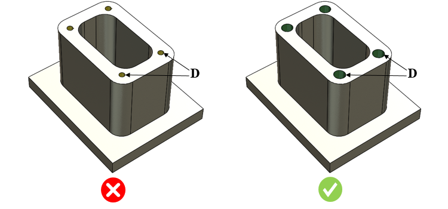

コア抜き穴の最小直径は、ユーザーが構成した値以上である必要があります。
コア抜き穴は、ダイカスト部品で広く使用されている穴です。材料に基づく最小穴径が特定の定義値を下回る場合、その穴は容易にコア抜き成形することができません。このような場合は、コア抜き成形ではなく、穴あけ加工を行う必要があります。
一方で、大きな穴はダイカストにおいてコア抜き成形が可能であり、多量の金属材料を節約できるほか、機械加工工程を高速化、あるいは完全に省略することも可能です。
穴あけ加工は二次加工であり、サイクルタイムを増加させるだけでなく、全体の製造コストも増加させます。容易に曲がったり破損したりして頻繁な交換が必要となる小径の中子は避けるべきです。
DFMPro は、穴の直径および割り当てられた材料に基づいて、部品上の穴径を識別します。このルールは、テーブルで構成された最小直径値をチェックします。コア抜き穴の最小直径は、ルールマネージャーで構成された値以上である必要があります。

D = コア抜き穴直径